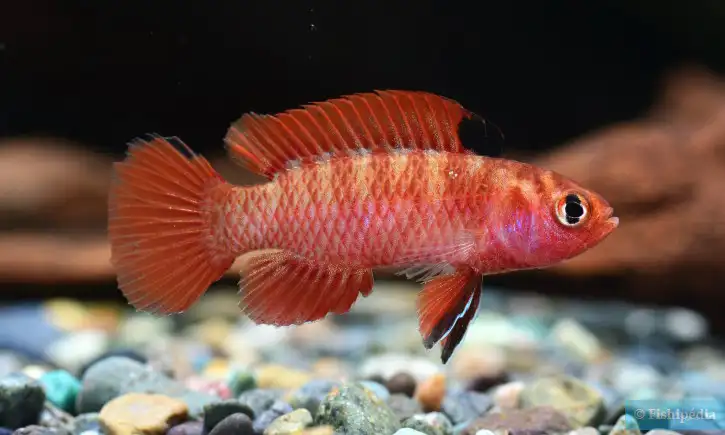
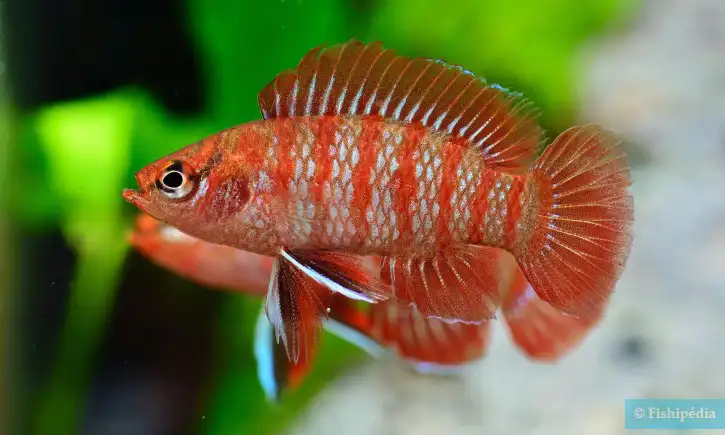
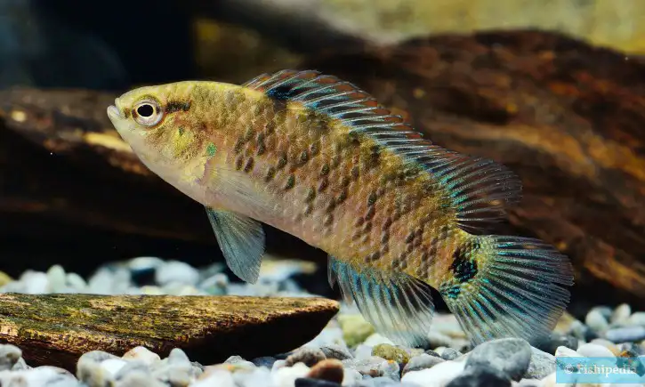

Aquascaping Conference
Find Community • Grow • Learn

Find Community
This aquascaping conference is more than a dive into underwater design—it's a chance to connect with others who share your passion. Whether you're new or experienced, you can learn, share ideas, and build lasting connections in a supportive, creative community.

Learn
Our Aquascaping conference is a great place to learn new skills through expert talks, live demos, and hands-on workshops. Whether you're just starting out or looking to improve, you'll pick up tips on design, plant care, and the latest techniques from experienced aquascapers.

Grow
This aquascaping conference helps you grow not just in skill, but as a person. It encourages patience, creativity, and attention to detail, while connecting you with others who share your passion. Stepping out of your comfort zone to learn and share builds confidence and personal fulfillment.